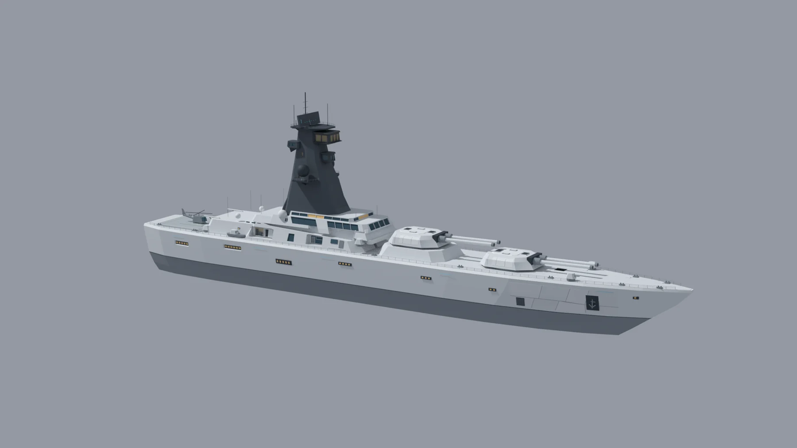
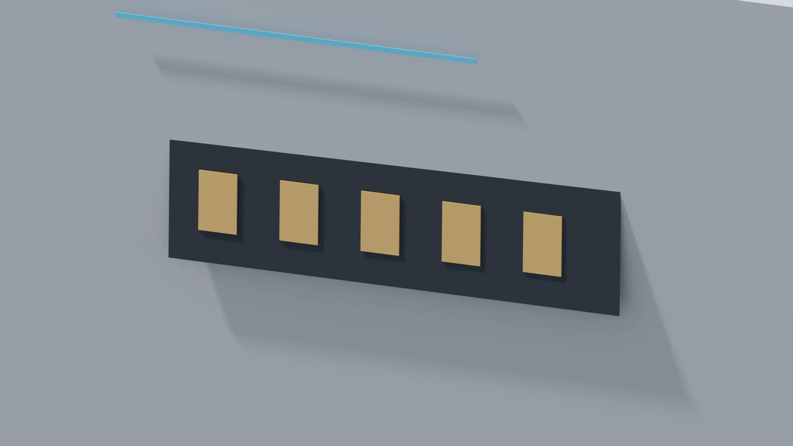
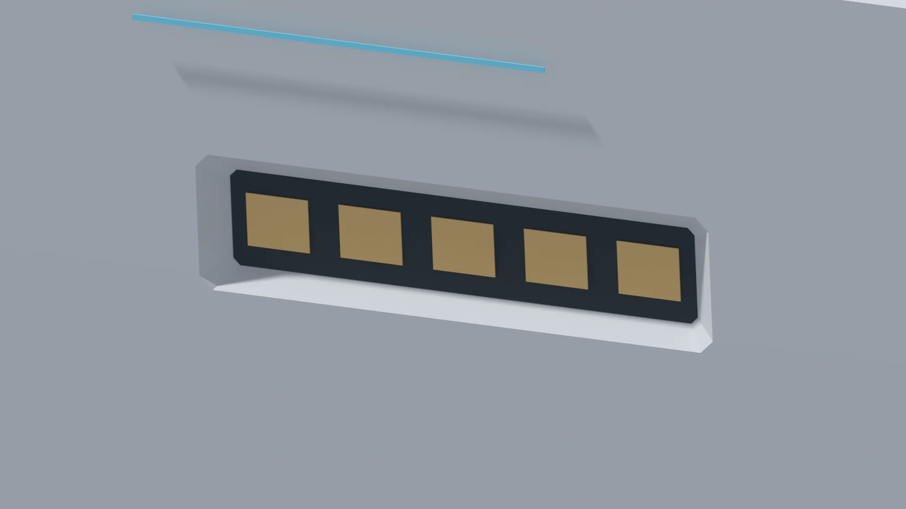

艦全体の基準スナップショット
35,761 オブジェクトを収めた全体モデル。16 個の分割圧縮ファイルから復元します。後続の局所追加をすべて統合した最新版ではありません。
85,981,279 bytes / 復元後 FCStd
復元ガイド 架空の近未来戦艦を、形状と検証の両側から。
全体の基準モデルと、船側の局所比較を公開しています。

FIG. 01 — WHOLE VIEW / AFTER船側パネルの Before / After を同じ視点で比較。スライダーを動かすと、外周の縁・凹部・影の違いを確認できます。


BEFOREAFTER5 枚の暖色パネル周囲の凹部と縁を比較します。
比較案の表示であり、基準モデルへの採用を意味しません。
実際の CAD 由来画像 8 枚。拡大して形状を確認し、原寸 PNG へ進めます。フロアマップは表示用合成であり、統合済み全艦 CAD ではありません。
全体を見るための基準と、局所形状を検証するための比較案。版を混ぜずに、目的に合うファイルから始めてください。
35,761 オブジェクトを収めた全体モデル。16 個の分割圧縮ファイルから復元します。後続の局所追加をすべて統合した最新版ではありません。
船殻 1 部品に、付属形状 13 部品。2 つの除去領域を元船殻から引いた比較モデルです。艦橋や砲塔を含む全艦組立ではありません。
14 区画のうち 2 区画を個別検証。残り 12 区画は未完です。この割合は、全艦の完成率・再現率ではありません。
配布の整合と復元結果を検証できる、公開スクリプトを添えています。
$ git clone https://github.com/Sunwood-ai-labs/witness-battleship.git
$ cd witness-battleship
$ python scripts/verify_files.py
$ python scripts/restore_v62.pyCI は配布スクリプトの検査を行います。FreeCAD の形状・描画検証は CI の対象外です。実船の設計、強度、水密、製造・安全認証には使用できません。
FreeCAD 1.0R での新規オープンを確認済み。
編集は作業コピーで。公開基準ファイルはそのままに。